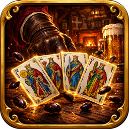

Mus Tavern
El Mus de siempre, con la baraja española, en una taberna con ambiente.
El juego
Mus Tavern es un juego gratuito del Mus tradicional: Grande, Chica, Pares y Juego, envites y órdagos. Juega contra la máquina, recorre La Ruta, sube de liga en Ranked y juega online con tus amigos.
- Partidas online por parejas.
- La Ruta: zonas, cofres y recompensas.
- Ranked por ligas y torneo mensual.
- Cosméticos: marcos, dorsos y barajas especiales.
- Tu progreso se guarda en tu cuenta (Google o correo).
Contacto
Escríbenos a adnara791@gmail.com.